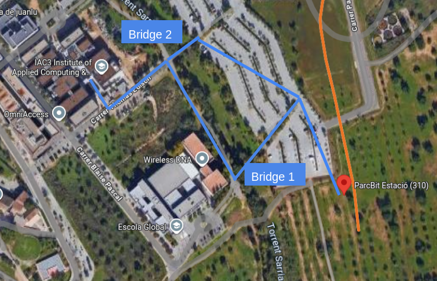

Venue
The meeting venue is the Institute of Applied Computing with Community Code (IAC3), located at Parc Bit in Palma. Parc Bit is slightly outside the historical city centre but is straightforward to reach by metro, city bus, or taxi.
Address
IAC3 / Parc Bit
Carrer Blaise Pascal 6
07121 Palma, Spain
Useful note
Public transport connections are generally easiest via Plaça d’Espanya / Estació Intermodal, which serves as the main city-centre hub for buses, metro, and airport transfer services.
Walking from ParcBit metro stop to IAC3
If you arrive by metro, get off at ParcBit. The institute is a short walk from the station. Use the path shown below. There are two small pedestrian bridges; take the second one (“Bridge 2”) to reach the IAC3 building.

From Palma city centre
The most convenient starting point is usually Plaça d’Espanya, the main transport hub in central Palma.
By bus
- EMT Line 19 “UIB i Parc Bit – Porta des Camp”.
- Operates from 06:55 to 21:38, roughly every 20 minutes.
- Final stop: ParcBIT.
- Travel time from Plaça d’Espanya: about 38 minutes.
- Ticket: €2, cash only, paid on board.
By metro
- Metro Line M1 “Metro Palma – UIB – ParcBit” from Estació Intermodal.
- Operates from 06:35 to 21:35, every 10–20 minutes.
- Final stop: ParcBit.
- From the station, the venue is about a 9-minute walk.
- Ticket: €1.80, purchased at the station machines.
- Total travel time: about 27 minutes.
From Palma Airport (Son Sant Joan)
By bus
- Take EMT Line A1 “Aeroport – Palma Centre” to Plaça d’Espanya.
- The A1 operates from 05:30 to 03:10, every 12 minutes.
- Ticket for A1: €5, cash only, paid on board.
- At Plaça d’Espanya, transfer to EMT Line 19 to ParcBIT.
- Ticket for Line 19: €2, cash only, paid on board.
- Total travel time: about 1 hour 9 minutes.
By taxi
- Taxis are available directly outside airport arrivals.
- Typical travel time to Parc Bit: about 30 minutes.
- Approximate fare: €30.
Planning ahead
For most participants staying in Palma, public transport from Plaça d’Espanya will likely be the simplest route to the venue. The metro is slightly faster overall, while the bus may be convenient depending on your accommodation and timing.
Additional local information, such as accommodation suggestions or social arrangements, can be added here later if needed.